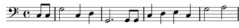

Prière du Rütli
Do majeur
Paroles: René Morax
Musique: Gustave Doret

Eternel notre Dieu,
Nous t'offrons librement
Nos cœurs et notre terre.
Reçois notre serment.
Nous mettons en commun
Nos foyers et nos vies,
Un pour tous, tous en un!
Une âme, une patrie!
Frères, nous sommes frères,
Hommes du même sang,
Fils de la même mère,
Épis du même champ.
Terre libre, ô ma terre,
Ici nous le jurons:
Libre, Libre!
Comme les pères,
Les fils te maintiendront!
Amen!